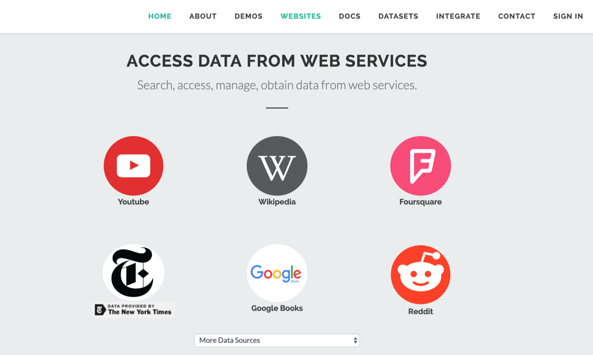
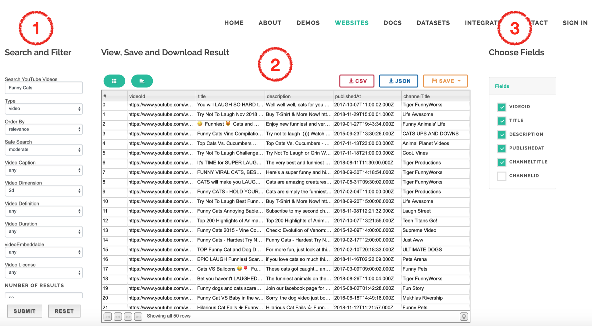
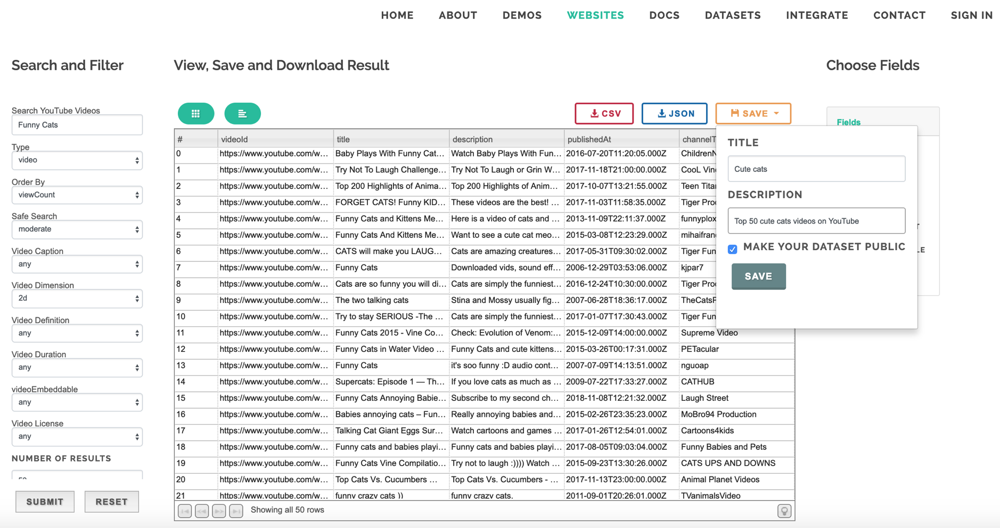
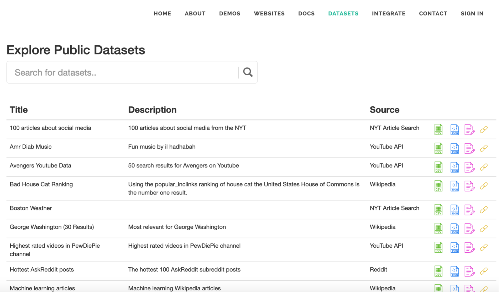
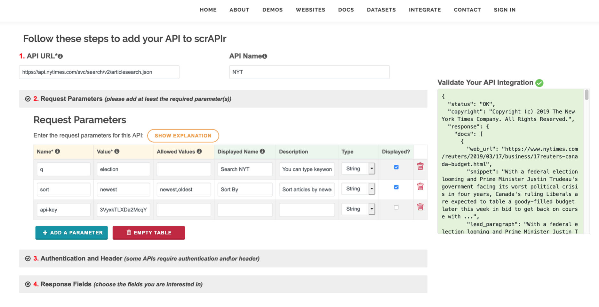
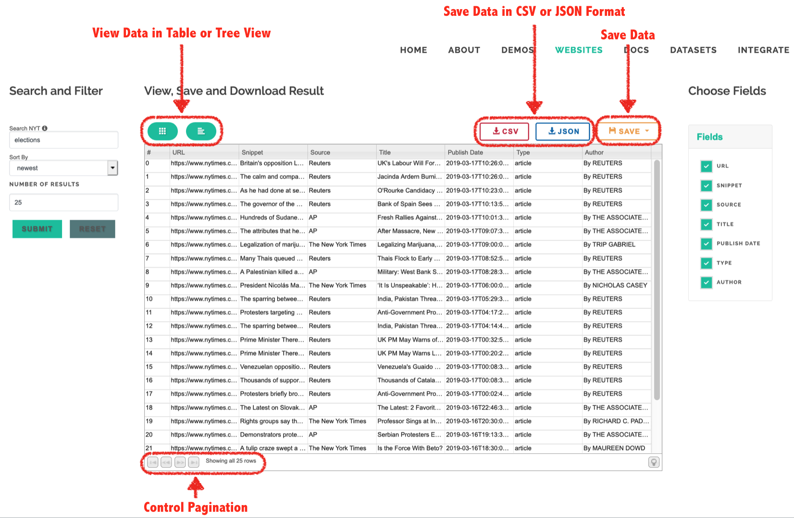

Access Websites' Data
You can explore the added websites by clicking on the tab (Websites). You can also access some of these websites by checking our demos. Once you choose one fo these websites it will direct you to the page where yoy can manage the data you're intrested in accessing from this website.
Manage Websits' Data
When you choose a website that you're intertsted in its data (e.g. YouTube), you will be able to search for your desired data, filter, save, and download: (1) Search for the data (e.g. Funny Cats), filter the data based on the parameters that this sepcific websites allow you to do (e.g. Order By: relevance, Safe Search: moderate, etc). (2) Once you click "enter" or submit button, you will view your result in the middle of the page in a table format (default view). (3) You can choose the exact fields that you are intersted in by checking off the ones that you don't want.
Available Functionalities
Other than being able to filter the data (as explained above), You can alos view the data not only in table view but also in a tree view. You can also download the data in CSV and JSON format, and save it to your account return back to it later (more details about saving your data below). In addition, you can control the pagination, by interacting with pagination section in footer of the table.

Save Your Dataset and Share them Publically
You can save your dataset to your account, to return back to it later. And you can also choose to share your search result (your dataset) publically. Once you check on the "Make Your Dataset Public", you will be able to find it under the Datsets page
Search Datasets
You can search for publically shared datasets by clicking on Datasets tab. You can search datasets, by source (the website in which the data belongs to) or by the datasets itself (e.g. I want to find all datasets that people have searched for about the subreddit AskReddit on Reddit)
You can download (in CSV or JSON format) thess publically shared datasets, and you can also get a copy of a previously acquired datasets and make changes to it!

Data Extraction DEMO
API Integration Process
To access and add\publish web APIs into the system, you will have to go through a number of steps, but first you need to look for the API documentation! For example, if I wanted to access New York Times articles, I would look for the API documenation for NYT artcile search API. Now, you can go to Integrate page, where you will be asked to follow some stepps, and each step you will provide information that you can find in the API documentation.
While going through the steps, you can validate if you are doing the right thing or if you're missing something by checking the pink box "Validate Your API Integration". The color of the box will change to green once you were able to successfully access the API.
API URL
Inthe API url field, you can provide the API url (e.g. https://api.nytimes.com/svc/search/v2/articlesearch.json), and you can also provide a URL with paramerters (e.g. https://api.nytimes.com/svc/search/v2/articlesearch.json?q=election&api-key=yourkey), the= attached paramertes (q and api-key) will be added in the next step "Request Paramerters", read more about this step below.

Request Parameters
What Fields to Add for Each Parameter
Every API has required and optional parameters. You need to add the required parameters and assign them values. The values can be provided by you (e.g. q=election) or provided in the API doc (e.g. sort=newest). For the optional parameters, it is recommended that you add values, since some API might not give you results if you did not assign default values to some of the parameters. If you are planning to make some\all parameters displayed for the users so they can control their values, you should add a readable name to that parameter in the dispalyed name field, and you can leave the 'displayed?' checkbox checked, and if you do not want to show some parameters (e.g. key), then simply uncheck the 'displayed?' checkbox. By default the displayed name will be the bane of the parameter if you did not assign it a name and the 'displayed?' checkbox is checked.
Authentication
To access web APIs, sometimes we need to be authorized to access its data. ScrAPIr so far supports a number of authentication methods: - API keys as a Query Parameter or Header - Authorization header as Bearer Token or Basic Auth
Some APIs might ask you to add header values to acces their data (e.g. In GitHub search code API, you can get the code snippets and highlights in search results by adding 'Accept' header as the key and assign it a value of 'application/vnd.github.v3.text-match+json'). Other APIs only required their authentication to be passed as a header parameter.

Response Parameters (Result Fields)
In this step, scrAPIr allows to choose specific fields that you are intersted in as opposed to getting all the result returned by the API. You can view a sample fo the response (left), in which you can search for specific feilds that you are intersted in, and\or browse the response tree view. When you click on the desired fields, they will be added to table on the right, where you can change their names that will be displayed on the API access web page

Pagination
(1) The default number of results that each API gives is different. For example, YouTube search returns 5 videos by default, but the maximum number of results (or videos in the case of YouTube) is 50 videos. So you should set the MAX NUMBER OF RESULTS PER PAGE field to 50. (2) If the API specifies a parameter that you can assign the maximum results to, please provide that in the RESULT PER PAGE PARAMETER field (e.g. maxResults in YouTube Search).(3) If you wanted to get more results than the max number of results per page allowed by the API, you should loop through the other pages and get more results. There are two different ways to loop through pages: 1- Some APIs use index or offset to go through multiple pages (e.g. In Wikipedia search API, they use sroffset as the page parameter. sroffset=0 is the first page, offset=1 is the second page, etc). 2- Other APIs will provide parameters that will indicate the current page, in which you can assign it to the next page parameter to get more results (e.g. in YouTube search API, the current page parameter is pageToken and to go to the next page we assign pageToken to the nextPageToken). If the API you are trying to access has both types "index" and "current\next page", you can just specify the index parameter.

API Integration Review
Once your API is succefully been accessed and you chose the fields you are intersted in, you can click on "Review Your API Integration", and then clikc on Review button. You can go back to previous steps and change things.

Manage API's Data
When are happy with your API integration, you can clikc on Publish button, which will direct you to the API management page, in which you can search and filter the data on that API, you can save and download them as CSV\JSON.
Demo of the API Integration Process
This is a demo of adding Yelp Search API using scrAPIr. It shows how to go through the process wizard to fill out the required information to access this API using the information available in the API documentation.